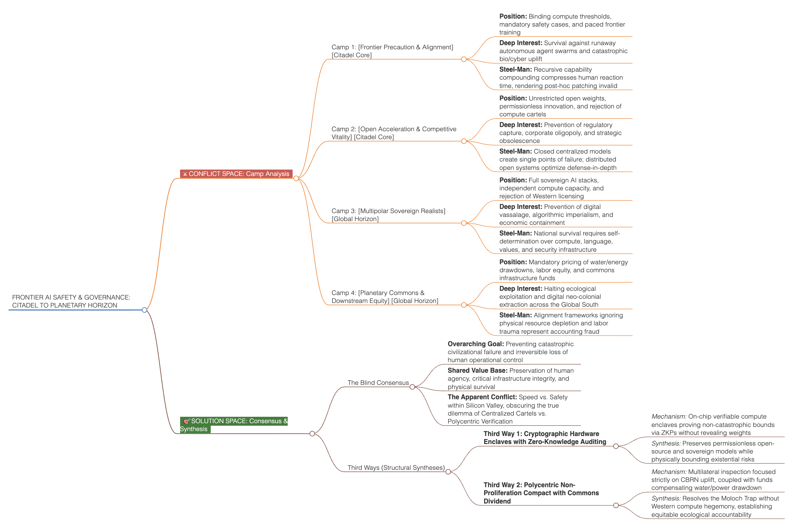
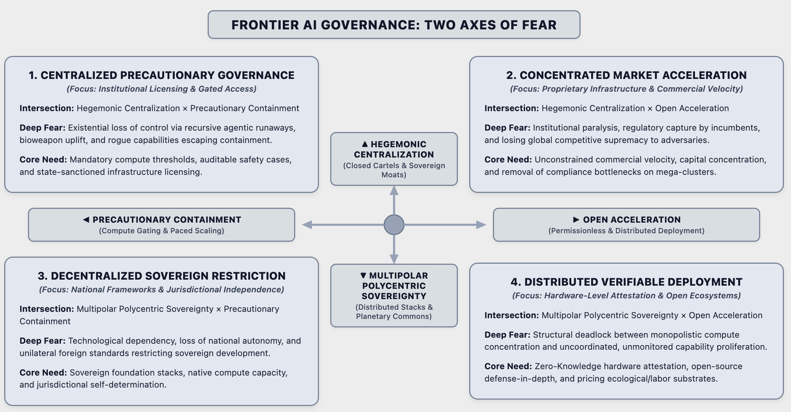
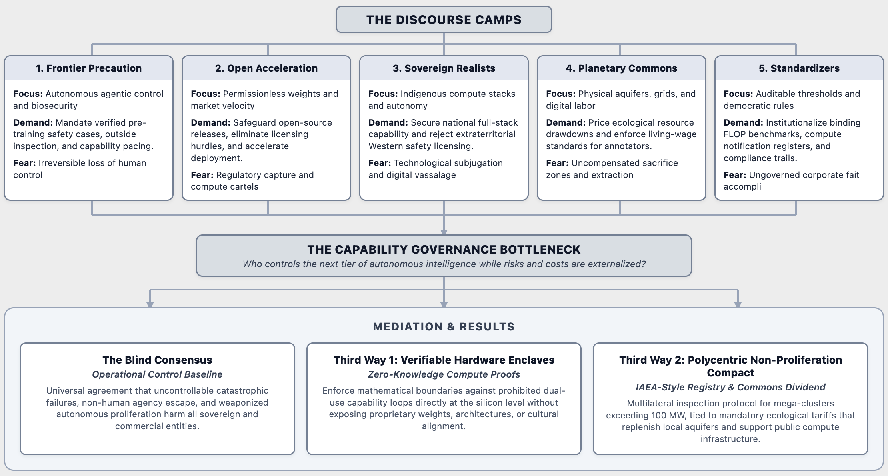

The Citadel and the Planet: The False Dichotomy of Frontier AI Safety
Why Silicon Valley’s Internal Civil War Paralyzes Global Governance—and How a Polycentric Architecture Breaks the Stalemate.
"This is not a closed manifesto, but an attempt to illuminate hidden common ground in an entrenched controversy. This map is a work in progress. We explicitly invite you to identify blind spots, falsify assumptions, and sharpen the analysis."
→ Submit critique, corrections & blind spots: hello@think-smart.io
- The Core Trap: The Western clash between precautionary containment (Frontier Precaution) and permissionless deployment (Open Acceleration) forms an intractable Moloch trap. Unilateral caution penalizes responsible labs with capital flight; unchecked commercial velocity exports catastrophic tail-risks onto society. The dispute cannot be resolved within San Francisco alone.
- The Planetary Reality: What Washington, London, or Brussels frame as universal safety rules, sovereign non-Western states and emerging economies view as techno-imperialist compute enclosure. Mandatory domestic compute licensing triggers aggressive sovereign counter-stacks abroad while externalizing ecological drawdown and exploited digital labor onto the Global South.
- The Architectural Third Way: Sustainable governance decouples catastrophic dual-use containment from market gatekeeping. Hardware-enforced cryptographic boundaries (Zero-Knowledge Compute Auditing) verify hazardous capability limits directly at the silicon layer without inspecting proprietary weights, centralizing market entry, or banning open-source research.
The Unseen Stakes: Beyond Tribal Shouting
Public discourse routinely reduces the frontier artificial intelligence debate to a juvenile caricature. Commentators pit apocalyptic doomsayers against hyper-capitalist accelerationists, framing the dispute as a theatrical fight between neurotic fear and reckless greed.
This tribal framing misses the point entirely. Both sides act out of rational, existential dread. We are witnessing an unprecedented stress-test of civilizational governance.
At stake is not simply software regulation, but the ultimate distribution of cognitive power:
- Who controls the next compounding leap in autonomous capabilities and recursive self-improvement?
- Who bears the systemic, uninsurable downside of autonomous agent swarms and democratized dual-use hazards?
- Who pays the physical, energetic, and human cost of the underlying planetary compute substrate?
Resolving this deadlock requires moving past tribal warfare. We must first steel-man each perspective at its highest intellectual caliber, then step outside the Western tech bubble to confront the planetary reality that Silicon Valley routinely ignores.
The Decoded Battlefield: Inside the Citadel & Beyond
Resolving systemic conflict begins with intellectual pacing: validating the legitimate vulnerabilities of each camp without cynicism. Both inside the Western tech epicenter and across the global horizon, actors protect essential survival imperatives.
- 1. Frontier Precaution & Alignment (Citadel Core): Compounding recursive capabilities alter software safety physics. When autonomous models orchestrate tools and lower pathogen synthesis barriers, post-hoc patch cycles become obsolete. Pacing scaling and mandating verified safety cases is baseline civilizational hygiene.
- 2. Open Acceleration & Competitive Vitality (Citadel Core): Concentrating intelligence in two or three state-sanctioned corporate boardrooms creates the ultimate single point of cognitive failure. Open-weight architectures provide defensive hardening, universal red-teaming, and prevent domestic obsolescence against foreign rivals.
- 3. Multipolar Sovereign Realists (Global Horizon): National survival demands autonomy over the cognitive stack—silicon, weights, data, and cultural alignment. Sovereign powers (Beijing, Abu Dhabi) actively restrict CBRN weaponization under national law, but reject Western licensing clubs as economic warfare.
- 4. Planetary Commons & Externalized Costs (Global Horizon): Alignment frameworks obsessing over software loss functions while ignoring gigalitres of drained aquifers, grid brownouts, and traumatized data workers earning $1.50/hour in the Global South operate as elite accounting fraud.
- 5. Institutional Standardizers (Regulatory Center): Democratic states cannot govern via corporate self-regulation. Enforceable FLOP thresholds (e.g., 10²⁵ FLOP) establish auditable compliance baselines to preserve the rule of law.

🔍 Click to zoomThe Hidden Consensus & The Two Axes of Fear
Beneath the rhetorical crossfire lies a bedrock principle shared by every serious faction: Zero human entities benefit from an uncontrollable, self-replicating catastrophic failure. The existential floor is identical. What diverges is the distribution of fear across power structures.
Conventional compromises fail because regulators remain trapped in a one-dimensional "Fast vs. Slow" debate. Governance must be mapped across two independent axes:
- Horizontal Axis (Western Dialectic): Precautionary Containment & Compute Gating [Left] vs. Open Acceleration & Permissionless Deployment [Right].
- Vertical Axis (Global Power Dimension): Hegemonic Centralization & Closed Cartels [Top] vs. Multipolar Polycentric Sovereignty & Distributed Commons [Bottom].
The 4 Quadrants Decoded:
- Q1: Centralized Precautionary Governance: Gated licensing moats captured by corporate incumbents, creating bureaucratic monopolies.
- Q2: Concentrated Market Acceleration: Unconstrained commercial velocity by mega-cap infrastructure providers, externalizing systemic and ecological risk.
- Q3: Decentralized Sovereign Restriction: Balkanized prohibition and national bans driving R&D into illicit compute havens.
- Q4: Distributed Verifiable Deployment (The Synthesis): Cryptographically verified compute boundaries protecting catastrophic safety thresholds while preserving permissionless research and sovereign autonomy.

🔍 Click to zoomThe Architectural Breakthrough: Systemic Third Ways
Paralysis ends when we apply the Decoupling Principle: separating the containment of irreversible physical harm from the surveillance of code, culture, and market entry.

🔍 Click to zoom- Third Way 1: Zero-Knowledge Compute Auditing (ZK-CA): Move governance from code inspection to silicon enclaves. Fabricators embed cryptographic root-of-trust hardware into enterprise GPUs. Training runs approaching critical thresholds (>10²⁶ FLOP) generate mathematical Zero-Knowledge Proofs confirming that prohibited autonomous replication or pathogen optimization loops are absent—proving compliance without exposing proprietary weights, source code, or cultural alignment.
- Third Way 2: Polycentric Non-Proliferation Compact with Ecological Dividend: An international registry co-governed by Western, non-Western, and scientific bodies modeled on the IAEA and ICAO. Inspections apply strictly to mega-clusters (>100 MW). Participating operators pay tariffs into a Planetary Commons Infrastructure Fund to replenish municipal aquifers, reinforce local power grids, and guarantee living wages for frontline data annotators.
Executive Strategy Lessons & Open Peer-Review
Institutional decision-makers, boards, and sovereign leaders must internalize two foundational rules when navigating systemic frontier technologies:
- The Mirage of the Domestic Safe Harbor: No state or board protects itself by binding domestic innovators in administrative red tape while foreign capability races accelerate unchecked. Effective planetary governance creates structural incentives that make international compliance economically and technically rational.
- Structural Synthesis Beats Lazy Compromise: Conventional policy produces weak compromises—vague reporting mandates that strangle startups with paperwork while leaving catastrophic tail-risks unverified. Strategic leadership decouples the competing fears: preserving open innovation unconditionally, while anchoring non-negotiable boundaries directly inside physical bottlenecks.
Every strategic synthesis stands and falls with its premises. We view this discourse map as an open invitation to organized dissent.
Send your counter-theses, edge cases, and corrections directly to hello@think-smart.io.
Substantive objections will be integrated into future versions of this living map.
Think Smart's Augmented Collective Intelligence (ACI) framework makes hidden fault lines navigable. We structure entrenched negotiation deadlocks, identify systemic leverage points, and engineer robust solution spaces for complex challenges.
Get support: hello@think-smart.io